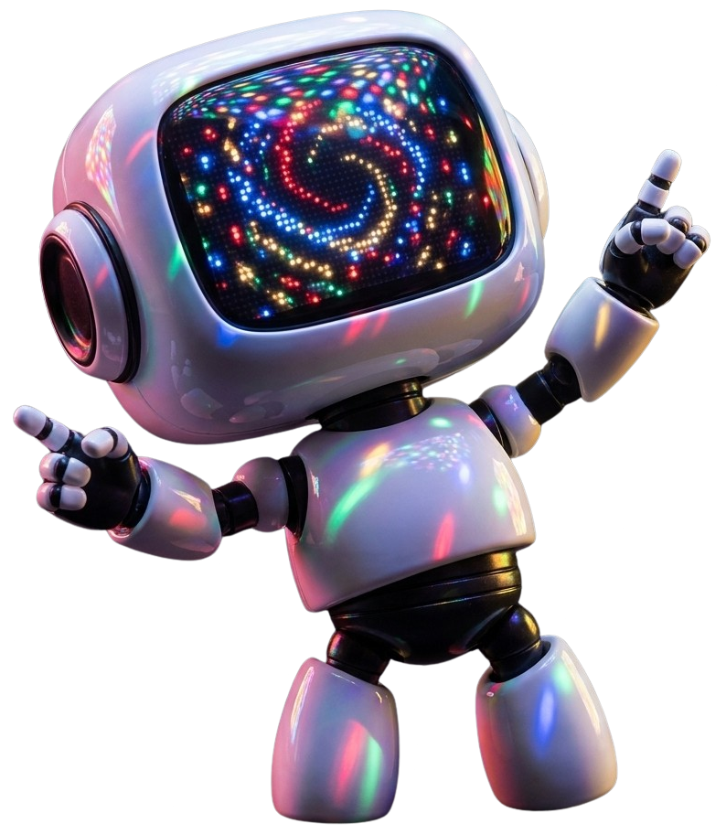

Project name
Healthy
# Collections
The visual and component system behind Toko — Internet Computer-native generator, wallet, launchpad, and secondary marketplace. This guide is a single source for type, color, components, and the patterns the product is built on.

Rendered with the project's own fonts (Anton, Mona Sans, Mona Sans) and the canonical logo and character art. Built to hold up at desktop and at ~375px wide. Use the Light / Dark toggle (top-right of the page) to flip the entire guide between modes and verify every component reads correctly on both surfaces.
Toko leads with a friendly character and an unapologetic display typeface. Keep visual personality concentrated in empty states, onboarding, and success moments — never on dense data views.


Use: the logo is two files — the character (2026-05 - face.svg, preferred; 2026-05 - face.png as a raster fallback for surfaces that can't render SVG) and the wordmark (app-name.png). Default to the SVG; only reach for the PNG when SVG isn't supported or you specifically need a fixed-pixel raster (e.g. OG/social images, older email clients). The wordmark file is white as shipped, so use it as-is on dark surfaces; on light surfaces apply filter: brightness(0) to flip it to black. Never recolor the character. Pair the character and wordmark with a gap and clear-space equal to the height of the "T".
Each emotion is a folder of frames in bot-images/ — pick a single frame when used statically, sequence frames when used as a Lottie/GIF. Below is the full library at one representative frame each.



| Moment | Recommended emotion folders |
|---|---|
| Onboarding / first run | Hi, Teach / present |
| Empty state — no data yet | Recharge, Inspect, Read |
| Empty state — search returned nothing | Inspect, Oops / sorry |
| Success / confirmation | Thumbs up, Love, Party |
| Achievement / reward | Confident, Thumbs up, Grateful |
| Error / mistake | Oops / sorry, Not mathing — never use a happy pose with an error message |
| System unhealthy / outage | Unwell, Anxious |
| Loading / system busy | Type, Read |
| Pre-launch / countdown | Determined |
| Live event / featured drop | Podcaster, Spotlight, Mic drop |
| Drawing attention to UI | Point, Question |
| Profile avatar (logged in) | Hi, Confident |
| Big reveal / announcement | Mic drop, Spotlight |
Use: empty states, loading states, success moments, onboarding, marketing. Avoid: sprinkling through data tables, list rows, or transactional flows where personality reads as noise. Never: recolor, flip, or modify the character — use the pose that fits instead.
Direct, friendly, never breathless. Sentence case in body copy, all-caps display type in headings. Errors are matter-of-fact, not apologetic. Status copy is short ("Draft", "Live", "Upload Failed"). No emojis in product copy.
Three color languages, each scoped to one role. Lifecycle drives stage indicators. Health drives resource gauges. Notification severity drives toasts and banners. Don't cross them.
Page background: application pages sit on the Page grey (--surface-page, #EAEAEA) — the light grey tone used throughout the app shell. Canvas white is reserved for the cards, panels and surfaces layered on top; it is never used as a full-page background. The Page grey is the quiet contrast that lets white cards read as raised.
Rule: lifecycle colors carry the stage on a Status pill — a soft tint background with matching text and dot — and as the active segment of a Draft/Review/Live selector or the accent line on a Card header. Never use them as button backgrounds. The same three stages apply to projects, collections, and individual tokens.
Rule: health red and lifecycle red share a hue. That's deliberate — both mean "stop / attention." Don't introduce a second red.
Three families, each with a single job. Anton for display. Mona Sans for emphasis and labels. Mona Sans for everything else.
Both are condensed and usually set in uppercase, so they're easy to confuse. The bright line is 24px. Anton is one ultra-heavy display weight that loses legibility below 24px; Mona Sans has true weights (400–900) and stays crisp at caption sizes. Self-test: is it uppercase? No → Mona Sans. Yes → is it 24px or bigger? Yes → Anton. No → Mona.
Page titles, section headers, hero text, big numbers. Never UI controls, never below 24px.
Eyebrows, table headers, stage pills, tag chips, nav group labels — the sizes Anton physically can't do.
Anton (left) is blacker and tighter; Mona (right) is lighter with open counters. If a Mona label starts reading like "mini Anton", it's set too big or too heavy — drop it back to 10–13px at weight 700–800.
| Surface | Family | Spec |
|---|---|---|
| Page / section titles, hero | Anton | ≥24px · uppercase · tracked |
| Big stats, counters | Anton | ≥24px · tabular context only |
| Eyebrows, group labels | Mona Sans | 10–12px · 700–800 · uppercase · 0.14–0.18em tracking |
| Table headers | Mona Sans | 11px · 800 · uppercase |
| Stage pills, tag chips | Mona Sans | 9.5–11px · 700 · uppercase |
| Subheadings (sentence case allowed) | Mona Sans | 16–18px · 700 |
| Everything in sentence case | Mona Sans | 13–18px · 300–900 |
Headlines and section labels are uppercase. Body copy is sentence case. Never use Anton below 24px (it loses legibility). Use Mona Sans when a label needs emphasis but Anton would be too loud (form labels, table headers, eyebrows). Body text always Mona Sans. Quick self-test: uppercase? No → Mona Sans. Yes → 24px or bigger? Yes → Anton, no → Mona.
Spacing is a multiple of 4. Radius scales with surface size — small controls 4–8px, cards and modals 12–16px, pills are fully rounded.
Two icon systems. Semantic notification icons are filled black circles with a white glyph. Health gauges are colored battery icons. Don't mix: don't use a colored circle for a notification, don't use a black battery.
Collection guards are buyer-facing permission promises, shown on the public collection page and across collection management (Manage → Guards, status summaries, the Live locked list). Each guard ships as a self-contained shield badge in two states: on (solid black — the permission is allowed / active) and off (muted grey — blocked / inactive, a stronger guarantee to buyers). Unlike the line icons, these are pre-coloured raster badges — don't recolour them with currentColor. Render at 22–32px. (Placeholder art, PNG only; SVGs to follow.)
Single visual treatment for inputs: light alt-canvas fill, soft border, focus ring in primary text color.
Helper text sits below the field at 12px slate. Required is a red asterisk after the label. Optional uses an uppercase chip on the right of the label row. Helpers are short — one line, no terminal period unless a sentence.
Error text replaces helper text on validation failure. Use the destructive red and a leading icon. Success messaging is rare — reserve it for inputs where confirming validity matters (handle availability, claim code, transaction hash).
Three flavors. Select for one-of-many short lists. Multi-select when several values are valid; selected values appear as removable chips inside the control. Autocomplete when the option set is long enough that scanning is slower than typing.
Right-aligned secondary metadata (count, rank, currency code). Two-line items use a 14px title with a 12px slate description below — choose this layout when the user genuinely needs the context to decide.
Each selected value renders as a small dark chip inside the control. The chip × removes that value without opening the menu. Use a placeholder when nothing is selected.
A real text input lives inside the control. Matches highlight the typed substring. The typeahead shows the top results, filtered as the user types. Use for long sets — collections, vendors, principals, attribute values.
Checkboxes for multi-select, radios for one-of-many, switches for binary settings. The bulk-action bar uses the indeterminate checkbox state when a partial multi-select is active.
For form lists, pair the control with a 14px title and an optional 13px slate description. Click target is the whole row. Wrap the row inside .option-list when the rows belong together (settings panel, multi-select group).
Switches in a settings list always sit on the right with the label on the left. Optional secondary text drops below the title at 13px. Rows divide with a 1px hairline.
Use when secondary text would be noise — short labels in toolbars, filters, or quick toggles.
A switch that toggles a hidden field group on and off. Use when an input is conditionally relevant — opt-in royalties, custom claim requirements, an alternate payout address. Off is the default; the body collapses entirely.
The switch sits in the top-right of the head. Title and description follow the same spec as labeled selection rows. The revealed body is divided from the head with a hairline and inherits a slightly raised surface to signal "this is now active." Off state collapses the body fully — never just disable the inputs and leave them visible.
Status indicates the current stage of a project, collection, or token. The same three stages — Draft, Review, Live — apply to all three. Use Status pills for inline indicators and the stage selector for stage selection or progress.
Left: unassigned (pre-review). Middle: assigned or reserved. Right: locked and retired on Live.
Two card kinds: Project (top-level creator workspace, gets a health pill and a collections count) and Collection (a token-policy boundary inside a project, shows token count). Same anatomy, different metadata row.
Two row primitives. dropdown-item is text-only and stripes alternating rows for scannability. Collection Menu adds a thumbnail and a count, and uses a pill on the active row.
The current row uses a soft canvas-alt pill, not a checkbox. Multi-select is reserved for token tiles, not collection rows.
Token thumbnails. Corner controls reveal on hover or persist when a multi-select session is active. Use the checkmark variant only when at least one tile is selected — empty checkboxes appear on all sibling tiles to invite selection.
Dark by default for high contrast. Light variant for use on dark surfaces. Arrow placement reflects the trigger position.
Each upload renders one row. Blue bar = in-progress (with percentage). Green = done. Red = failed (with "Upload Failed" replacing percent label).
Simple Modal Base: white surface, large radius, display-typeface title, lede below it, content area, action group on the right. Use the info strip for cost or consequence disclosures (e.g. "this will use ICP").
Horizontal tab bar for navigating between sections of the same surface (Overview / Guards / Supply / Attributes / Rarity / Tokens / Review on the collection editor). Scrolls horizontally on narrow viewports. Distinct from the Draft/Review/Live stage selector — tabs change what you're editing, the stage selector changes which stage you're viewing.
Inline indicators that tell the creator what happens to a setting when the collection goes Live. Pair with section headers on the configuration editor.
Use Locks at Live for structural fields (supply, guards, attribute schema). Use Editable in Live for presentation fields (banner, description, social handles).
Large clickable choice cards for high-stakes selections — supply policy, rarity model, vendor type. Use the "Most common" pill when one option is the safe default.
Progressive disclosure for secondary detail. Default closed. Use sparingly — content the creator needs to reach for ≥50% of the time should not be hidden behind a click.
Sticky bottom bar that appears when there are unsaved edits on a configuration page. Lives outside the scroll container.
Same token, two audiences. The public card carries identity only — name, issue, edition. The studio card adds a creator-only panel with mint progress and remaining capacity.
Collectors and the public. Identity only.
Creator only. Adds mint progress and remaining count.
× prefix prevents confusion with issue numbers.Hidden.Edition 4/25 on capped tokens with copy numbering enabled. Falls back to soft Limited edition / Open edition / 1 of 1 when copy numbers are hidden. No mint progress is ever shown publicly.Every token wears its rarity. The border is part of the card itself — a coloured frame the artwork is inset into. Three border systems cover every collection: a plain default, creator-picked tiers, and the canonical weighted ladder.
| System | Who picks the colour | When to use it |
|---|---|---|
| Default / uniform | Toko ships a single neutral border. | Collections with no rarity, or where every token is rated the same. |
| Tiered | The creator picks one colour per tier. | Bespoke ladders that don't map to the canonical 7. Recommendation: pick distinct hues that read clearly at thumbnail size. |
| Weighted (canonical) | Toko-defined. | The seven-step ladder used across the marketplace. |
The border is a solid-colour outer frame with the artwork inset by 8px. The inner card carries its own corner-radius — drawn in code with the image rendered over it — so the rounded corners stay clean regardless of the tier colour. Card-to-card spacing in a grid stays at var(--s-3) (12px) so the borders never abut.
Same anatomy, neutral fill. Reads as "framed but unranked" against any surface.
A recipe, not a fixed palette. The creator chooses one colour per tier they define. Use distinct hues with enough contrast to read at thumbnail size; reserve very saturated colours for the top tiers.
Each tier has one canonical hex — the rarity colour — reused wherever the tier is referenced (frame, dot, tag, text). All seven tiers render the frame as a flat fill of their hex; no gradients, no halos, no metal sheens. The top three tiers — Legendary (light yellow-orange), Mythical (deep pink), and Inconceivable (cyan) — are tuned to feel equally vibrant so none dominates the others.
Don't override the rarity border to indicate selection — that's the moment the user most needs to see what tier they're picking. Add an outer black ring with a 4px gap and a corner check badge instead. The rarity stays legible, the selection is unambiguous, and it stacks cleanly on every tier including Inconceivable.
The frame colours are surface-agnostic by design. The inner card flips to the dark canvas treatment automatically.
Always render the border in code as an outer container with the artwork inset over it — never bake the border into the artwork. Card spacing in a grid stays at var(--s-3) (12px) so the borders never touch. Selection is an outer ring plus a check badge — never an override of the rarity colour.
Collection-wide defaults for how tokens identify themselves on the public card. Vendors can override these before going live.
| Option | Sample |
|---|---|
| Hidden | no # |
| Show issue number | #7 |
| Show issue and supply cap | #7 / 100 |
| Option | Sample |
|---|---|
| Hidden | — |
| Show edition number | Edition 4/50 |
| Option | Sample |
|---|---|
| Allow stacking | ×10 |
| Always individual | 1, 2, 3… |
"Allow stacking" is fungible-style (coins, ammo, consumables). "Always individual" is collectible-style (numbered prints). Showing edition numbers forces "Always individual".
Two surfaces. The top bar is the always-visible header; the sidebar is the in-app navigation rail. On narrow viewports the sidebar collapses behind a hamburger (☰) in the top bar — kebab (⋮) is reserved exclusively for per-row overflow menus (e.g. token tile actions).
A full-width, always-dark application header that spans the entire page above all other chrome. In Studio the sidebar begins below it — so the brandmark appears exactly once, at the far left, and is never repeated in a sidebar beneath it. The bar and every control on it are identical in light and dark themes — it does not recolour. Below 768px the nav, the Studio link and the theme toggle fold into the hamburger (☰), which opens the sidebar as a slide-in overlay; the notifications bell and the wallet control stay in the bar.
Left: the brandmark, then the public destinations — Launchpad and Marketplace. Right: the Studio link, a hairline divider, then the account controls. There is no separate Wallet nav item; the wallet control on the right is the wallet. The bar has two states. Connected: the account controls are the notifications bell with an unread count, the theme toggle, and the cyan wallet pill showing the principal. Not connected: there is no bell, and the wallet control becomes a white Connect button — the primary call-to-action on the dark bar. Studio stays visible when signed out so visitors see as much as possible before connecting; tapping it starts the connect flow.
The dark in-app navigation rail, shown on screens ≥768px. It sits below the top bar, so it never repeats the brandmark. The rail is context-aware, with four iterations. Studio · no project: the profile and All Projects only. Studio · project: adds the project card, its sections, and pinned collections. Studio · collection: a pinned collection is expanded to its editor sections — Manage, Supply, Attributes, Token types, Rarity, Manage tokens. Non-Studio: the wallet-side rail — My Tokens, Offers, Activity. Below 768px the rail is hidden by default and slides in as a full-height overlay when the hamburger (☰) in the top bar is tapped.
Persistent toolbar that appears at the edge of the viewport while a multi-select session is active. Empty checkbox = no selection. Indeterminate (minus) = partial selection. Reuses the bar shell for post-action success feedback.
A wide illustration tile that anchors the bottom of every page. The image carries its own top-fade, so it eases into the page background without an explicit divider — the page just trails off into a friendly clutter of bots and tools.
Drop the asset full-width at the bottom of the page. The internal opacity gradient handles the fade; no extra mask or wrapper needed. Sits flush to the bottom edge, no horizontal padding.
The asset's white-to-transparent gradient is inverted with a CSS filter. The illustration goes light, the gradient becomes dark-to-transparent, and the whole thing fades into the dark page exactly the way the light variant does.
<img class="page-footer" src="page-footer/Rectangle 1175.svg" alt="" />
.page-footer {
display: block;
width: 100%;
height: auto;
margin-top: auto;
pointer-events: none;
user-select: none;
}
:root[data-theme="dark"] .page-footer {
filter: invert(1);
}
Use sparingly. The footer belongs at the bottom of long marketing or browse pages — not in modals, drawers, or transactional flows. Don't crop it. The illustration is designed at 1728 × 307 and works best at full page width. Don't tint it. The grey is intentional; coloured variants risk competing with token art above. Keep it decorative. The image is purely illustrative — never put functional UI inside or on top of it.
Two flavours. A full-screen empty keeps the page's normal header (eyebrow, Anton title, one-line intro), then the hero image, then the empty-state message, primary action, and any extra info underneath. A compact inline empty — an empty table or a filtered list with no matches inside an otherwise-populated page — drops the hero for a small character frame. Keep copy short and action-oriented; one primary action only.
Order: title & intro → image → everything else underneath. The page keeps its normal header — eyebrow, Anton title, and a one-line intro — above the hero. Then the 16:6 hero image, then the empty-state headline, supporting copy, the primary action, and any additional information (a "how it works" explainer, fact cards) underneath. Image spec lives in Imagery & backgrounds — assume a finished 1600 × 600 JPG named no_<name>.jpg.
Payout identities that earn a royalty on each sale, after fees.
For an empty region inside a populated page (an empty table, a filtered list with no matches). No hero image — a small character frame, one line, and the action.
When you mint or claim something, it'll show up here.
Full-bleed photographic and rendered artwork — empty-state heroes and carousel backgrounds. Both are cropped with object-fit: cover / background-position: center, so the same file has to survive more than one crop. Export to spec, keep the subject centered, and ship JPG.
These are continuous-tone photos and 3D renders with no transparency, so JPG at quality ~80 is correct: it lands 80–90% smaller than PNG for the same result. Reserve PNG for flat graphics, UI, logos, or anything that needs a transparent background (the character art stays PNG). Run every export through an optimiser so a hero is never heavier than it needs to be.
The wide banner that sits below the page title in an empty-state screen (the .empty-hero pattern). It spans the full content width — the same width as the cards, explainer, and panels below it — with the image area locked to a 16:6 ratio. Export at 1600 × 600 so it stays crisp at typical container widths. On phones (≤560px) the frame switches to a taller 4:3 crop that trims the left and right edges — so keep the hero element horizontally centred with ~10% of clear margin each side.
| Property | Spec |
|---|---|
| Aspect ratio | 16 : 6 (8 : 3) |
| Export size | 1600 × 600 px (16:6 · full content width, retina-ready) |
| Format / weight | JPG · quality ~80 · ≤ 200 KB |
| Crop behaviour | cover · centred · mobile recrops to 4:3 (trims sides) |
| Safe area | subject centred, ~10% clear margin left & right |
| Folder | style-guide/empty-state-hero/ |
Assume a finished asset. Each hero is delivered ready to use — a 1600 × 600 JPG named no_<name>.jpg. Drop it straight into the folder; no resizing or re-cropping on our side.
Naming. no_<name>.jpg (underscore), where singular is the overview of one thing and plural is the list of them — this is what keeps the project overview and the collection overview from colliding.
| Surface | File |
|---|---|
| All projects · studio entry | no_projects.jpg |
| Project overview · empty project | no_project.jpg |
| Collection overview · empty collection | no_collection.jpg |
| Collections · list | no_collections.jpg |
| Generators · list | no_generators.jpg |
| Access | no_access.jpg |
| Whitelists | no_whitelists.jpg |
| Beneficiaries | no_beneficiaries.jpg |
Full-bleed slide art behind the hero carousel (hero-carousel.html). Desktop renders the carousel at a 16:6 banner (up to ~1300px wide); phones (≤720px) switch to a 3:4 portrait. Because the same file fills both a wide and a tall box from the centre, export a large 16:9 master and keep the focal subject inside the central safe zone so it survives both crops.
A dark gradient scrim sits over the left third on desktop and the bottom on mobile to keep the white headline legible. Don't put essential detail in those zones — favour a lower-detail or naturally darker area there, and let the focal subject sit centre / centre-right.
| Property | Spec |
|---|---|
| Display ratio | 16 : 6 desktop · 3 : 4 mobile (≤720px) |
| Export size | 2560 × 1440 px (16:9 master covering both crops) |
| Format / weight | JPG · quality ~80 · ≤ 400 KB |
| Crop behaviour | cover · centred — must read wide and portrait |
| Safe area | focal subject in the central ~60% (h & v) |
| Text scrim | keep left third (desktop) / bottom (mobile) low-detail |
The "view / edit" surface at the top of a project or collection. Both use the same identity container — one inset card, the same width as the content below it, holding the banner, thumbnail, name, description, and social links, with its own save footer. Never split these into a full-bleed banner plus separate form fields.
One inset container at content width — never a full-bleed banner. The banner sits across the top; the square thumbnail overlaps its lower edge as an avatar; the name is the Anton title beside the avatar. Description and Social links sit side by side as two columns on web and stack below ~720px. The save controls — an "unsaved changes" indicator with Discard + Save — live in the container's own footer, never in the breadcrumb / nav bar. Identical pattern for both project and collection.
| State | What it shows |
|---|---|
| Just created | Thumbnail + name + description carried from the create modal; empty banner shows a dashed "Upload a banner" prompt; no social rows yet — a hint plus the add-row only. |
| Populated | Filled banner; existing socials listed as editable rows (edit + delete) above the add-row. |
| Live | Banner & thumbnail are direct edits (save immediately); name / description / links show a "Needs save" chip; core policy is locked read-only below the card. |
Two different shapes that must always preview at their true aspect ratio. A banner is a wide horizontal header; a thumbnail is a square icon. Never force a banner into a square card, or stretch a thumbnail to fill a wide slot.
A banner is a wide 16:6 horizontal image — preview it at 16:6 everywhere it appears, never cropped into a square tile. A thumbnail is 1:1 and renders as the avatar / icon. In the media library this is why assets are split into separate Banners / Thumbnails / Other views — so each kind previews at its own ratio rather than being normalised to one card shape.
| Kind | Ratio | Used as |
|---|---|---|
| Banner | 16 : 6 wide | Project / collection header, marketplace hero |
| Thumbnail | 1 : 1 square | Avatar, list / grid icon, vendor tile |
Anywhere an image is set (new project, new collection, banner or thumbnail), the picker is two equal square tiles side by side: Upload and Media library, given identical treatment. The library option is a peer tile — never a smaller link or a secondary control beneath the upload box.
Both tiles are square, equal-sized, dashed, each with a 22px icon, a bold label, and a one-line hint — Upload uses the upload-arrow icon, Media library uses the grid icon. They sit side by side as equal peers; the media-library choice must never be demoted to a text link or tucked below the upload area. When the picker sets a square thumbnail the tiles are square; the same two-tile pattern applies when choosing a banner.